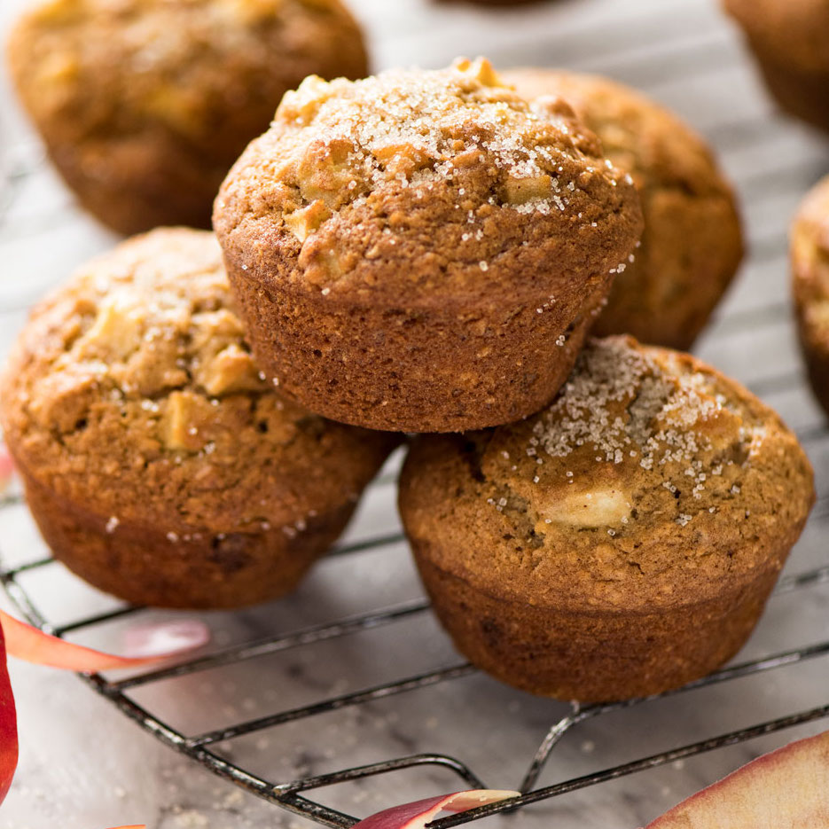

Apple Cinnamon Zucchini Muffins

Description
A moist, dense and delicious snack. Super easy! I had apples and zucchini that were just begging to be turned into something wonderful!
Ingredients
- cup oil
- eggs
- flour
- apple
- soda
- baking powder
- sugar
- vanilla extract
Steps
- Preheat oven to 350 degrees F
- Spray 24 muffin cups with cooking spray
- Whisk sugar, oil, eggs, and vanilla extract together in a bowl until smooth
- Stir flour, cinnamon, baking soda, and baking powder into sugar mixture just until batter is combined.
- Fold zucchini and apple into batter and spoon into the prepared muffin cups.
- Bake in the preheated oven until until muffins spring back after pressing the top, about 25 minutes.